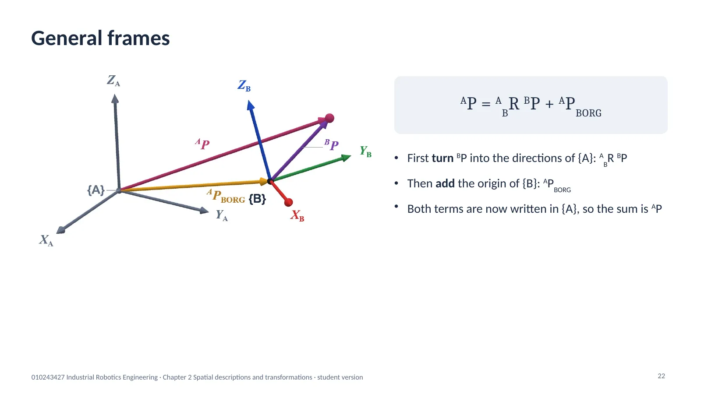
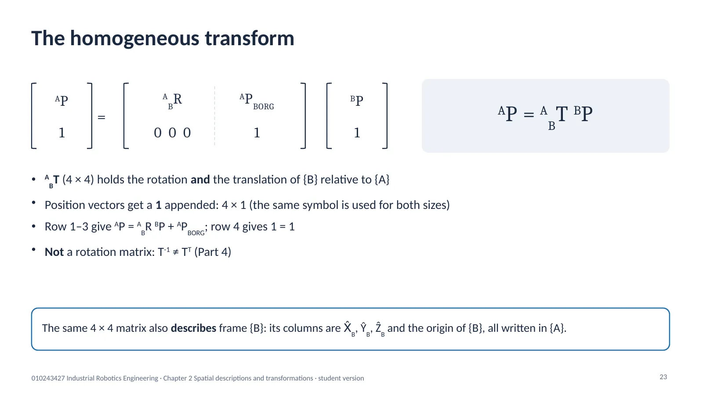
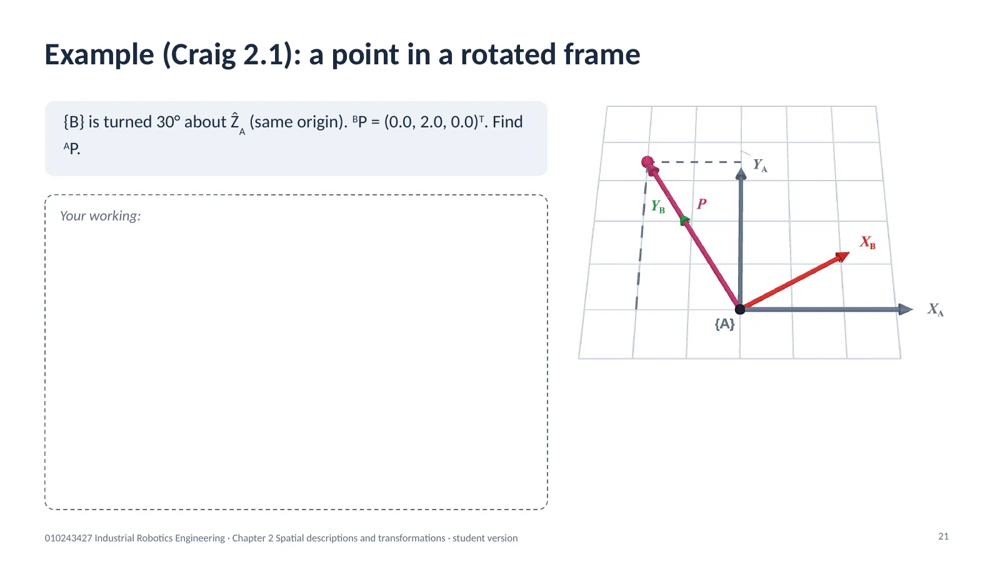
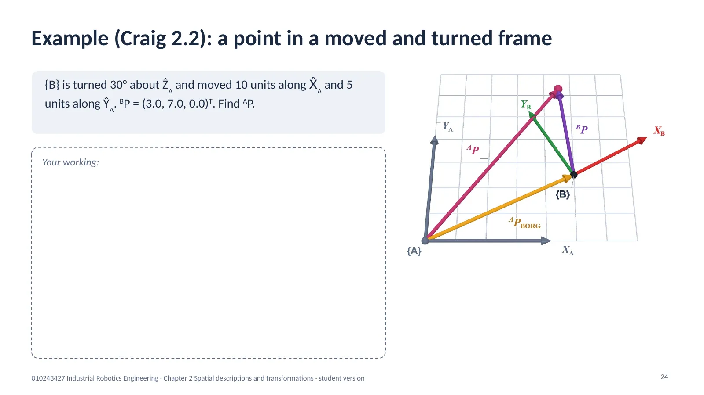

เรารู้ตำแหน่งของจุดในเฟรม {B} (เช่น จุดบนชิ้นงานที่วัดจากเฟรมของชิ้นงาน) และรู้ว่า {B} อยู่ที่ไหนใน {A} ต้องการตำแหน่งของจุดเดียวกันใน {A} เรียกว่าการส่ง (mapping): จุดไม่ขยับ เปลี่ยนแค่เฟรมที่ใช้เขียน หน้านี้ครอบคลุมสไลด์หน้า 19–24 (Craig 2.3) มี เครื่องมือ 1 ชิ้น (A) และ 3 โจทย์
We know a point in frame {B} (say a point of a part, measured in the part's own frame) and where {B} is in {A}; we want the same point in {A}. This is a mapping: the point does not move, only the frame it is written in changes. This page covers slides pp. 19–24 (Craig 2.3). It has one tool (A) and 3 problems.
ลูกศรสีส้มคือตำแหน่งจุดกำเนิดของ {B} (ᴬPBORG) สีม่วงคือจุด P ที่วัดจาก {B} (ᴮP) สีชมพูคือจุดเดียวกันที่วัดจาก {A} (ᴬP) ลูกศรทั้งสามเป็นสามเหลี่ยมเสมอ แต่บวกตัวเลขของสีส้มกับสีม่วงตรง ๆ ได้ก็ต่อเมื่อ {B} ไม่หมุน (โหมด "เลื่อน") ในโหมดอื่นต้องหมุน ᴮP ด้วย ᴬBR ก่อน ดูตัวเลขด้านล่างภาพ
Orange: the origin of {B} (ᴬPBORG). Purple: the point P measured from {B} (ᴮP). Pink: the same point measured from {A} (ᴬP). The three arrows always form a triangle, but the numbers of the orange and purple arrows add directly only when {B} is not turned ("translated" mode). Otherwise ᴮP must first be turned by ᴬBR: see the numbers under the picture.

ต่อเลข 1 ท้ายเวกเตอร์ตำแหน่งแล้ววาง R กับ PBORG ไว้ในเมทริกซ์ 4 × 4 ตัวเดียว แถวที่ 1–3 ของการคูณให้ \({}^{A}_{B}R\,{}^{B}P + {}^{A}P_{BORG}\) แถวที่ 4 ให้ 1 = 1 ข้อดีคือการแปลงหลายขั้นกลายเป็นการคูณเมทริกซ์ต่อกัน (หน้า 2.3) ซึ่งเป็นหัวใจของจลนศาสตร์ไปข้างหน้าในบทที่ 3 ระวัง: \({}^{A}_{B}T\) ไม่ใช่เมทริกซ์การหมุน จึงหาผกผันด้วยการทรานสโพสไม่ได้
Append a 1 to the position vectors and put R and PBORG into one 4 × 4 matrix. Rows 1–3 of the product give \({}^{A}_{B}R\,{}^{B}P + {}^{A}P_{BORG}\); row 4 gives 1 = 1. Several steps then become a product of matrices (page 2.3), the heart of forward kinematics in chapter 3. Careful: \({}^{A}_{B}T\) is not a rotation matrix, so it does not invert by transposing.


{B} หมุนรอบ ZA 30° และจุดกำเนิดอยู่ที่ \({}^{A}P_{BORG} = (10, 5, 0)^T\) (เหมือนข้อ 2) จุด Q อยู่ที่ \({}^{A}Q = (12, 10, 0)^T\) จงหา \({}^{B}Q\)
{B} is turned 30° about ZA and its origin is at \({}^{A}P_{BORG} = (10, 5, 0)^T\) (as in problem 2). A point Q is at \({}^{A}Q = (12, 10, 0)^T\). Find \({}^{B}Q\).